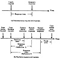

| Previous | Table of Contents | Next |
If two metrics give essentially the same information, it is less confusing to study only one. This is not always obvious, however. For example, in computer networks, the average waiting time in a queue is equal to the quotient of the average queue length and the arrival rate. Studying the average queue lengths in addition to average waiting time may not provide any additional insights.
Finally, the set of metrics included in the study should be complete. All possible outcomes should be reflected in the set of performance metrics. For example, in a study comparing different protocols on a computer network, one protocol was chosen as the best until it was found that the best protocol led to the highest number of premature circuit disconnections. The probability of disconnection was then added to the set of performance metrics.
The response time determines the time that a packet has to be kept at the source end station using up its memory resources. Lower response time is considered better. The throughput is the performance as seen by the user. Larger throughput is considered better.
The variability of the response time is also important since a highly variant response results in unnecessary retransmissions. Thus, the variance of the response time became the sixth metric.
Out-of-order packets are undesirable since they cannot generally be delivered to the user immediately. In many systems, the out-of-order packets are discarded at the destination end systems. In others, they are stored in system buffers awaiting arrival of intervening packets. In either case, out-of-order arrivals cause additional overhead. Thus, the probability of out-of-order arrivals was the seventh metric.
Duplicate packets consume the network resources without any use. The probability of duplicate packets was therefore the eighth metric.
Lost packets are undesirable for obvious reasons. The probability of lost packets is the ninth metric. Excessive losses result in excessive retransmissions and could cause some user connections to be broken prematurely; thus the probability of disconnect was added as the tenth metric.
The network is a multiuser system. It is necessary that all users be treated fairly. Therefore, fairness was added as the eleventh metric. It is defined as a function of variability of throughput across users. For any given set of user throughputs (x1, x2,..., xn), the following function can be used to assign a fairness index to the set:
For all nonnegative values of xi’s, the fairness index always lies between 0 and 1. If all users receive equal throughput, the fairness index is 1. If only k of the n users receive equal throughput and the remaining n - k users receive zero throughput, the fairness index is k/n. For other distributions also, the metric gives intuitive fairness values.
After a few experiments, it was clear that throughput and delay were really redundant metrics. All schemes that resulted in higher throughput also resulted in higher delay. Therefore, the two metrics were removed from the list and instead a combined metric called power, which is defined as the ratio of throughput to response time, was used. A higher power meant either a higher throughput or a lower delay; in either case it was considered better than a lower power.
The variance in response time was also dropped since it was redundant with the probability of duplication and the probability of disconnection. A higher variance resulted in a higher probability of duplication and a higher probability of premature disconnection.
Thus, in this study a set of nine metrics were used to compare different congestion control algorithms.
This section defines and explains some of the commonly used performance metrics. In each case, the definition proposed is only one of many possibilities. Some definitions will need to be changed to suit certain applications.
Response time is defined as the interval between a user’s request and the system response, as shown in Figure 3.2a. This definition, however, is simplistic since the requests as well as the responses are not instantaneous. The users spend time typing the request and the system takes time outputting the response, as shown in Figure 3.2b. There are two possible definitions of the response time in this case. It can be defined as either the interval between the end of a request submission and the beginning of the corresponding response from the system or as the interval between the end of a request submission and the end of the corresponding response from the system. Both definitions are acceptable as long as they are clearly specified. The second definition is preferable if the time between the beginning and the end of the response is long. Following this definition, the response time for interactive users in a timesharing system would be the interval between striking the last return (or enter) key and the receipt of the last character of the system’s response.

FIGURE 3.2 Response time definition.
For a batch stream, responsiveness is measured by turnaround time, which is the time between the submission of a batch job and the completion of its output. Notice that the time to read the input is included in the turnaround time.
The time between submission of a request and the beginning of its execution by the system is called the reaction time. To measure the reaction time, one has to able to monitor the actions inside a system since the beginning of the execution may not correspond to any externally visible event. For example, in timesharing systems, the interval between a user’s last key stroke and the user’s process receiving the first CPU quantum would be called reaction time.
| Previous | Table of Contents | Next |
){kind=link}
){kind=link}